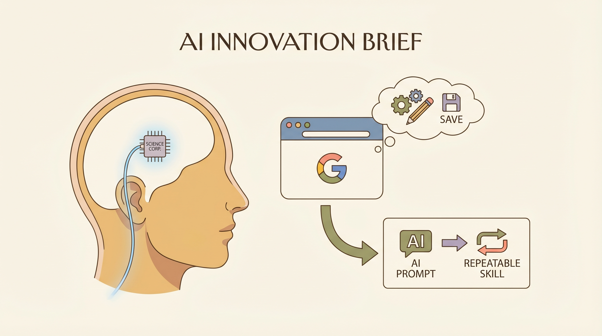

Max Hodak的Science Corp.即将在人类大脑中植入首个传感器，以帮助治疗神经系统疾病。
两克伴AIGC日报
2026-04-15 星期三

本期关注：Science Corp.将植入人类大脑传感器助治神经疾病，Chrome新增AI提示保存功能，Sam Altman遇袭引发AI安全警示，诺和诺德携手OpenAI加速药物研发，英伟达推出量子计算AI模型Ising助力量子计算机实用化。
📰 行业动态
Google将AI技能加入Chrome浏览器，方便用户保存和重复使用AI提示。
Google推出Chrome新功能，允许用户将AI提示保存为可重复使用的“技能”。
针对OpenAI CEO Sam Altman的攻击引发AI世界对安全的关注。
诺和诺德与OpenAI合作，利用AI加速药物研发，提升效率。
🔥 今日焦点
Anthropic Mythos Prompting Calls for More Security Measures一文指出，尽管对Mythos的访问受到限制，但其落入错误之手的风险却非常高，这促使组织采取紧急措施来保护自身。文章的核心内容是强调Mythos的安全问题，尤其是在当前AI技术快速发展的背景下，其重要性愈发凸显。
这一议题的重要性在于，Mythos作为一种先进的AI工具，其潜在的应用价值巨大，但同时也伴随着较高的安全风险。若Mythos被不法分子利用，可能导致严重的后果，如数据泄露、隐私侵犯甚至对国家安全构成威胁。因此，对Mythos的安全措施进行加强，对于维护AI领域的稳定和安全至关重要。
英伟达于4月14日宣布推出全球首个面向量子计算的开源人工智能模型系列——Ising。这一系列模型旨在为量子计算校准与纠错提供支持，助力研究机构和企业构建更优质的量子计算机，实现其规模化运行实用应用程序的目标。英伟达创始人兼首席执行官黄仁勋强调，AI在实现量子计算实用化中扮演着关键角色，Ising模型将成为量子机器的控制平面，将量子比特转化为高可靠性的量子GPU系统。
Ising模型的推出对AI领域具有重要意义。首先，它标志着AI技术在量子计算领域的深入应用，为量子计算机的性能提升提供了新的可能性。其次，Ising模型的开源特性将促进全球量子计算研究的发展，加速量子计算机的实用化进程。最后，Ising模型的成功应用有望推动AI与量子计算领域的进一步融合，为未来技术创新奠定基础。
📚 深度长文
《Not all AI agents are created equal》一文由Hamza Farooq撰写，发表于某AI领域 newsletter。文章核心观点在于，并非所有人工智能代理都同等重要，企业应建立一套框架来对代理项目进行分类和优先级排序。
作者通过深入剖析AI代理的多样性和复杂性，指出不同类型的代理在功能、性能和适用场景上存在显著差异。他提出了一个多维度评估体系，包括代理的智能水平、适应能力、交互方式等关键指标，为读者提供了一套系统化的思考框架。
Gemini Robotics ER 1.6，一款旨在提升机器人空间推理和多视角理解能力的先进系统，为现实世界中的机器人任务提供强大动力。文章深入探讨了该系统的核心观点，即通过增强具身推理，实现机器人对复杂环境的精准感知和智能决策。
文章以实证研究为基础，详细阐述了ER 1.6如何通过改进空间推理算法，使机器人能够更准确地识别和定位物体，从而在现实场景中实现高效导航。此外，ER 1.6还通过多视角理解技术，使机器人能够从不同角度获取信息，从而更好地理解周围环境。
在2026年的展望中，Gergely Orosz的深度长文《AI对软件工程师的影响：关键趋势》揭示了AI工具对软件工程师职业的深远影响。文章通过一项AI工具使用调查，揭示了工程师们对AI成本上升的担忧，以及更多工程师达到使用上限的现象。调查指出，AI工具对不同类型工程师的影响并不均衡，这表明了AI在软件开发领域的广泛应用背后所隐藏的复杂性和挑战。
核心观点集中在AI工具的普及与成本问题，以及其对工程师职业的影响。关键论据包括AI成本的激增、工程师使用限制的增多，以及AI工具对不同工程师群体效果的不一致性。文章强调，尽管AI工具旨在提高生产效率和创新能力，但它们也带来了新的挑战，如技能更新需求、资源分配不均等问题。
📄 重点论文
**核心贡献**: 提出了一种针对长时程智能体任务（如智能体搜索和深度研究）的并行测试时间缩放方法，通过并行生成多个rollout并聚合为最终响应，同时考虑了轨迹的长度、多轮次和工具增强等特点。
**与AI Agent的关联**: 该研究对长时程智能体任务的并行处理提供了新的思路，有助于提高智能体在复杂环境下的性能和效率。
**核心贡献**: 研究了基于基础模型（如大型语言模型）的智能体在闭环人机物理系统中的鲁棒性和确定性，并提出了相应的解决方案。
**与AI Agent的关联**: 该研究为智能体在复杂人机交互环境中的应用提供了理论基础和技术支持，有助于提高智能体的可靠性和可控性。
🛠️ 产品推荐
Show HN: ContextPack是一款代码库上下文映射的CLI工具。该工具通过静态分析引擎，实现以下核心功能：一、遍历代码仓库，无需读取不必要文件；二、构建涵盖9种语言的导入图，按重要性对文件进行排序；三、在10秒内生成基于token预算的上下文映射。该工具完全离线运行，无需API密钥。针对初学者和开发者，ContextPack能快速定位代码库中的关键文件，提高开发效率，降低学习成本。
***
Show HN: Start Using Claude Managed Agents Today – Posse是一款基于AI技术的产品，旨在帮助用户构建和管理智能代理。该产品通过先进的人工智能算法，实现自动化任务执行和智能决策支持，有效提升工作效率。用户可以利用Posse轻松创建、部署和管理智能代理，解决日常工作中繁琐重复的任务，提高工作效率，降低人力成本。其AI能力和创新点在于，通过深度学习和自然语言处理技术，实现智能代理的自主学习与优化，为用户提供更加智能、高效的服务。
***
ILTY是一款基于AI的心理健康伴侣，旨在帮助用户应对焦虑、拖延等心理问题。该产品由一对夫妇共同研发，针对个人心理需求定制，旨在提供更贴近用户实际需求的解决方案。与传统心理健康应用不同，ILTY不仅提供心理指导，更注重引导用户自我反思，帮助用户建立积极的自我认知。通过AI技术，ILTY能够智能分析用户心理状态，提供个性化建议，助力用户克服心理障碍，提升心理健康水平。
***